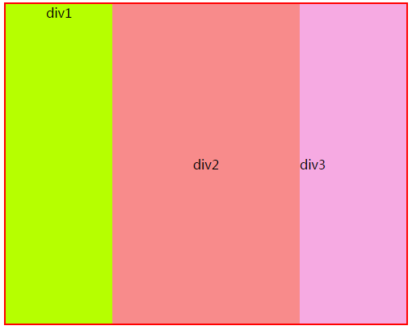

1. 前言
本节知识点有：
- box-shadow盒阴影
- box-sizing盒大小
- 多栏布局
- 盒布局
2. box-shadow盒阴影
- box-shadow
- 参数一：正值阴影往右偏，负值往左偏
- 参数二：正值阴影往下偏，负值往上偏
- 参数三：阴影的模糊程度，值越大模糊度越高
- 参数四：实心距离
- 参数五：阴影颜色
示例
<style>
div{
margin:50px auto;
width:200px;
height:200px;
background-color:antiquewhite;
box-shadow:0px 0px 5px 5px red;
}
</style>
3. box-sizing盒大小
- box-sizing
- content-box:默认，大小只包含内容区域，总大小等于 内容区+padding+border
- padding-box:内容包含padding,总大小等于设定的width+border，内容区大小等于总大小-padding
- border-box: 内容包含border和padding，总大小等于设定的width、height。内容区等于总大小-padding-border
示例代码
<!DOCTYPE html>
<html>
<head>
<meta http-equiv="Content-Type" content="text/html; charset=utf-8"/>
<title></title>
<meta charset="utf-8" />
<style>
*{
padding:0;
margin:0;
}
div{
width:20%;
height:200px;
float:left;
box-sizing:border-box;
}
div:nth-of-type(odd){
background-color:#00ff90;
border:5px solid red;
}
div:nth-of-type(even){
background-color:#f90;
border:5px solid #fb6868;
}
</style>
</head>
<body>
<div></div>
<div></div>
<div></div>
<div></div>
<div></div>
</body>
</html>
4. 多栏布局
- column-width: 每栏目的宽度
- column-gap: 栏目之间的间隔
- column-count : 数字N，分成N列显示
- column-rule:栏目之间的间隔线
示例代码
<style>
* {
padding: 0;
margin: 0;
}
div{
column-count:5;
column-gap:50px;
column-rule:1px red solid;
/*column-width:300px;*/
}
</style>
5. 盒布局
- display:-webkit-box;将元素设置为盒模型
- -webkit-box-orient:设置布局内容的方向
- -webkit-box-flex：设置合布局所占父元素比例权重
- -webkit-box-pack：设置合布局水平居中内容
- -webkit-box-align:设置合布局垂直居中内容
<!DOCTYPE html>
<html>
<head>
<title></title>
<style>
#main{
width:500px;
height:400px;
border:2px solid red;
box-sizing:border-box;
/*设置为盒模型*/
display:-webkit-box;
/*设置为水平布局内容*/
-webkit-box-orient:horizontal;
}
#div1{
background-color:#b6ff00;
/*设置所占父元素的比例*/
-webkit-box-flex:1;
/*设置字体水平方向居中*/
display:-webkit-box;
-webkit-box-pack:center;
}
#div2{
background-color:#f88b8b;
/*设置所占父元素的比例*/
-webkit-box-flex:2;
/*设置字体居中*/
display:-webkit-box;
-webkit-box-align:center;
-webkit-box-pack:center;
}
#div3{
background-color:#f6aae2;
/*设置所占父元素的比例*/
-webkit-box-flex:1;
/*设置字体垂直方向居中*/
display:-webkit-box;
-webkit-box-align:center;
}
</style>
</head>
<body>
<div id="main">
<div id="div1">div1</div>
<div id="div2">div2</div>
<div id="div3">div3</div>
</div>
</body>
</html>
